Disaster Communication Platform
Emergency Notifications
Programmierpraktikum: Soziale Netzwerke
Jasper Bernhardt
Elias Grünewald
Priska Kohnen
Bruno Kortowski
Nikita Krohmer
Nikias Praast
Franz Tscharf
Vincent Ulitzsch
Elias Grünewald
Priska Kohnen
Bruno Kortowski
Nikita Krohmer
Nikias Praast
Franz Tscharf
Vincent Ulitzsch
EN152
Sommersemester 2016
Complex and Distributed IT Systems
Technische Universität Berlin

Complex and Distributed IT Systems
Technische Universität Berlin
Soziales Netzwerk
Katastrophenfall
Anwendungsfälle:
Soziales Netzwerk
Katastrophenfall
viele Funktionen
leichte Bedienung
individuelle Anpassung
Registrierung
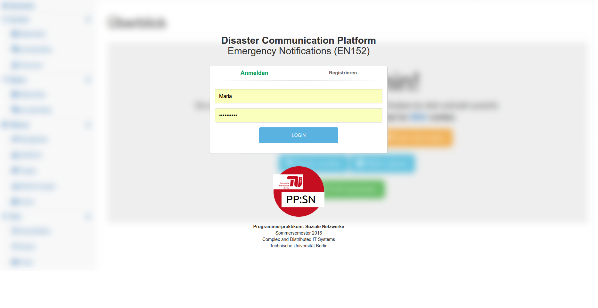
Erste Schritte
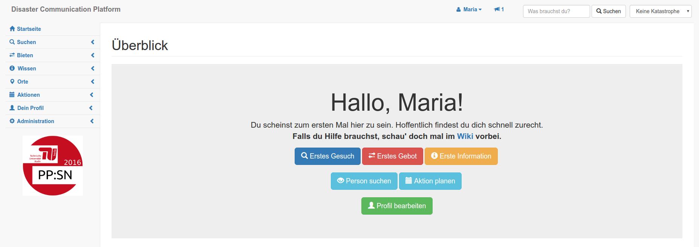
Ordnung halten
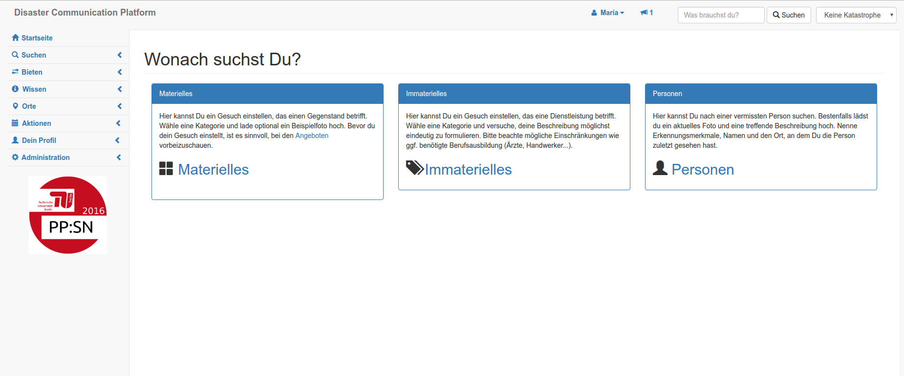
Gesuche einsehen
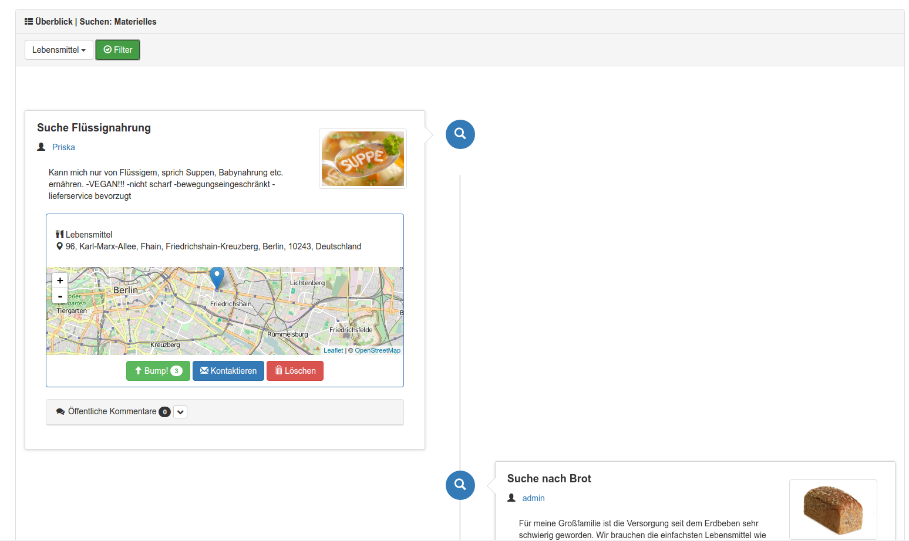
Gesuche formulieren
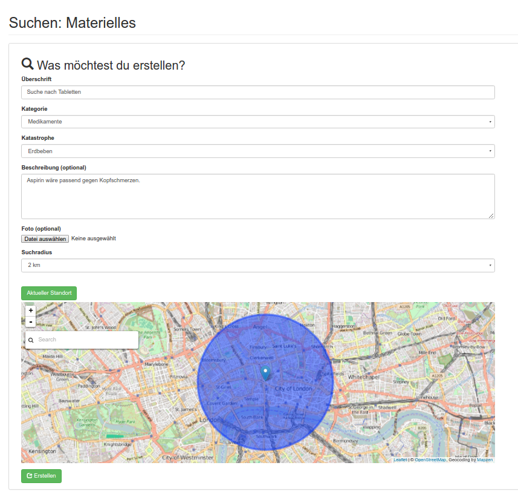
Inhalte ordnen
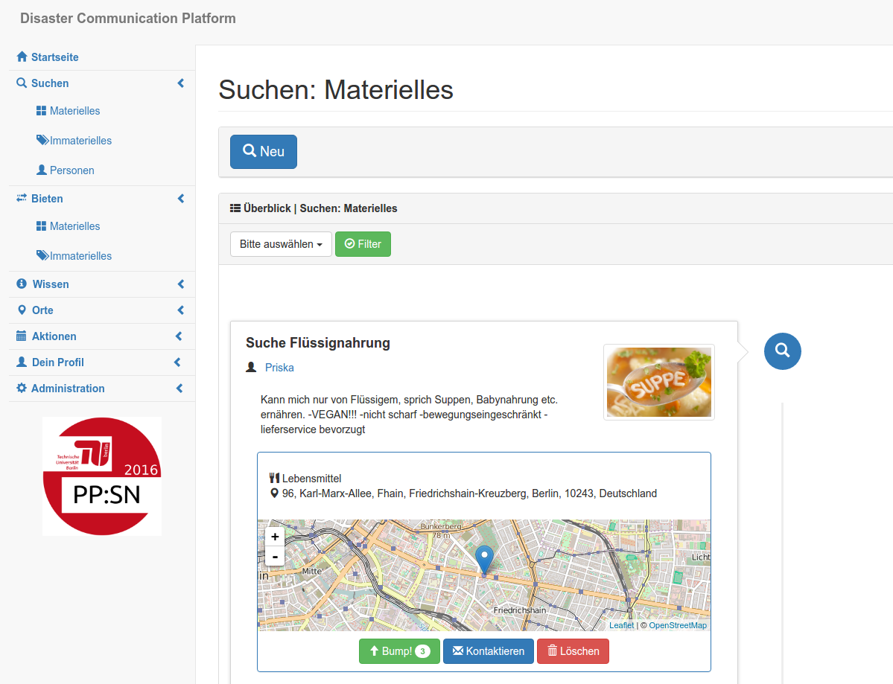
Personen suchen
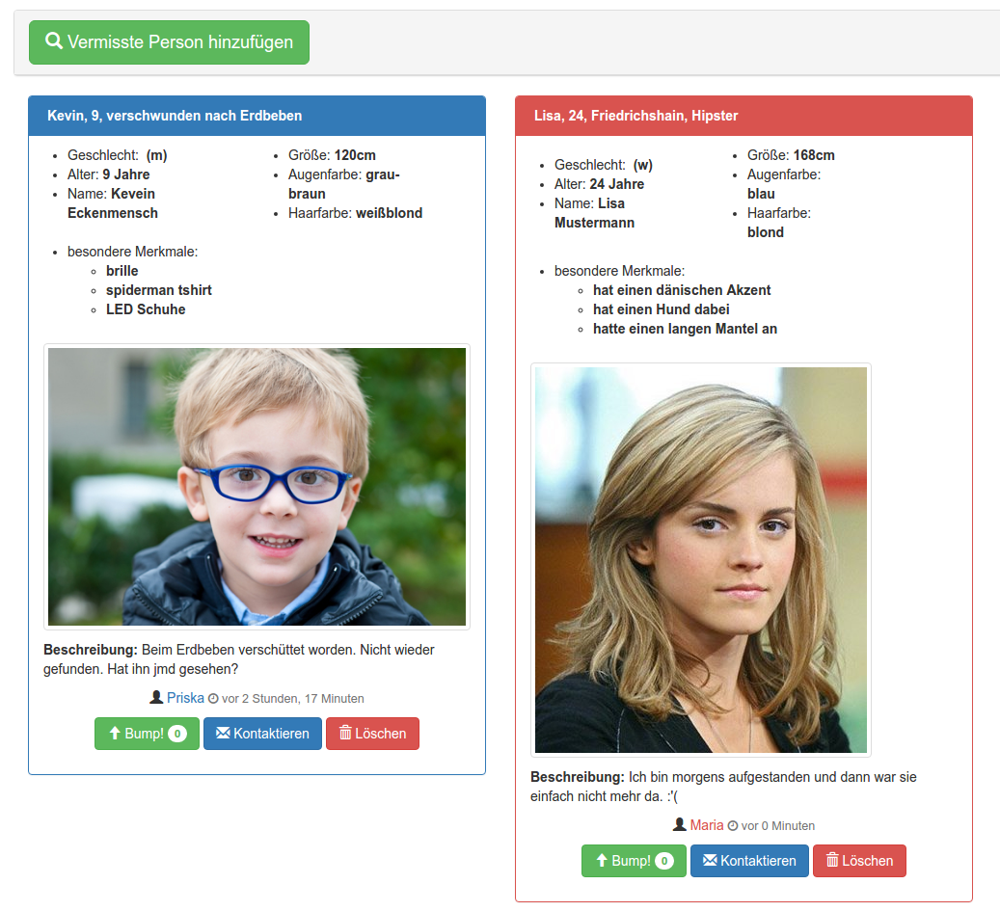
Updates erhalten
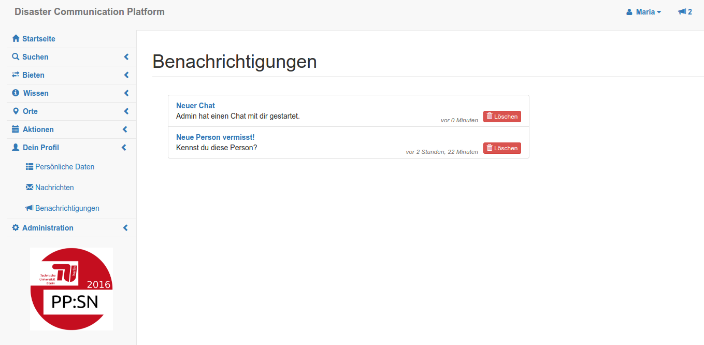
Updates erhalten
- Extremsituation
- Reizüberflutung
- Hilfe/soziale Kontakte
- Standortunabhängigkeit - Mobilität
Aktionen planen
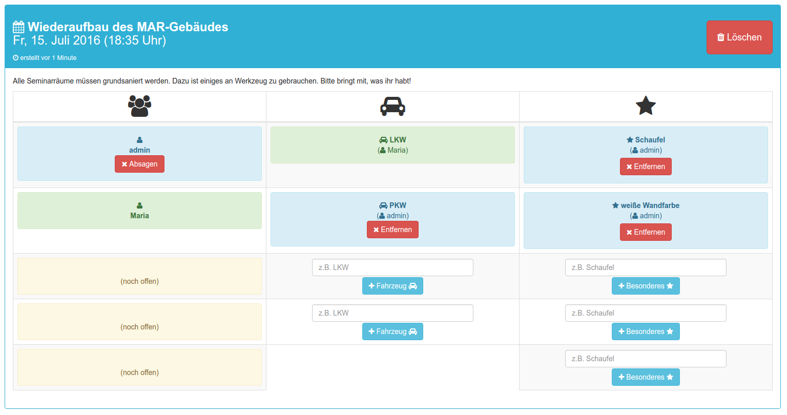
Entscheidungen treffen
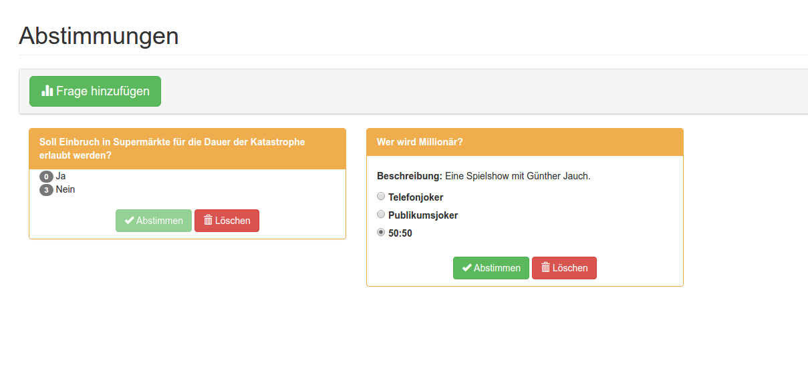
Professionell helfen
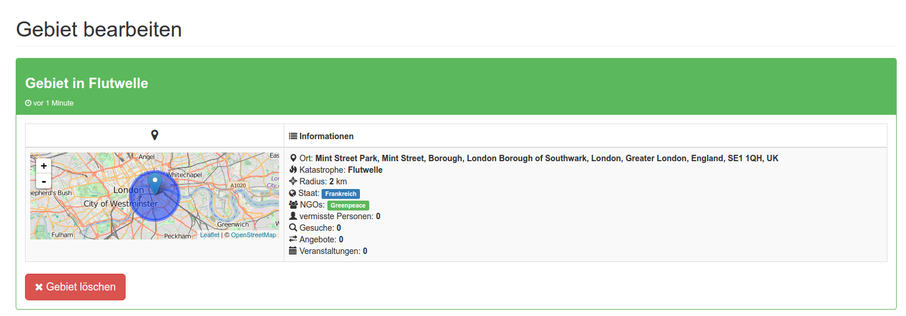
Professionell helfen

Missbrauch verhindern
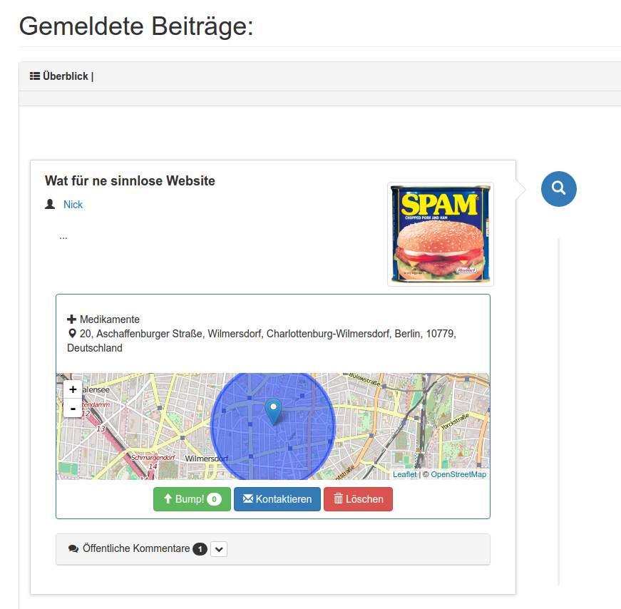
Unterstützend wirken
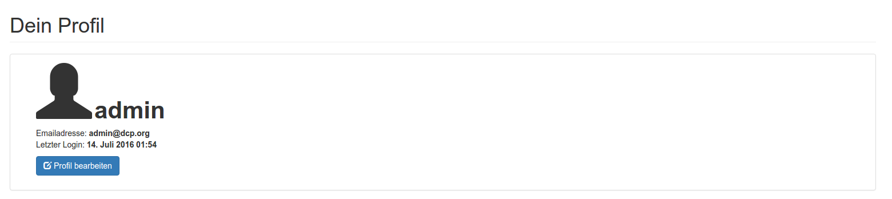
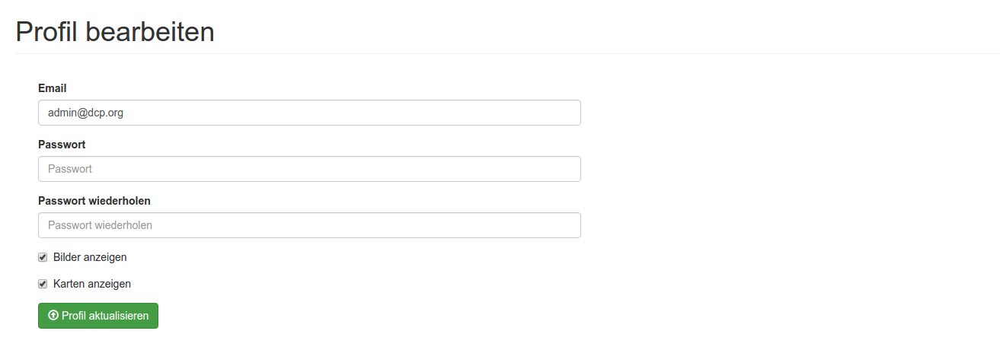
Allen helfen
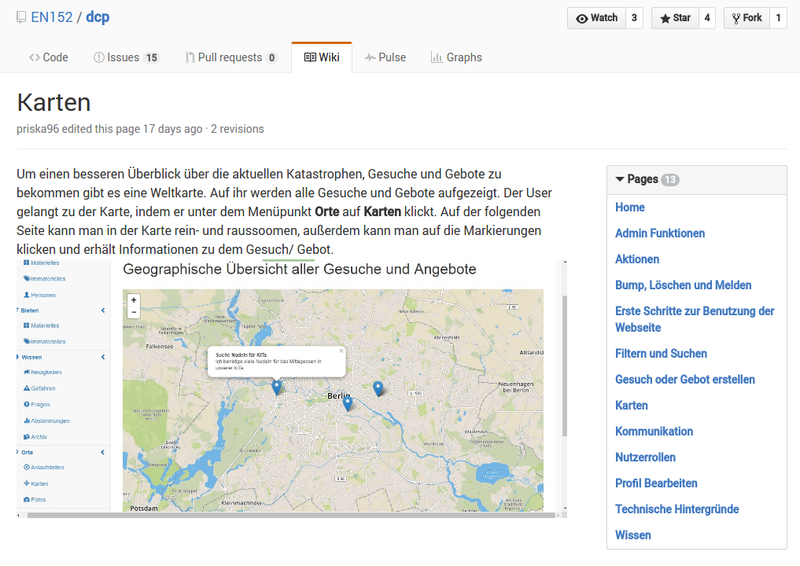
Disaster Communication Platform
- soziale Interaktion
- einheitliches Bedienkonzept
- durchdachtes Rechtemanagement
- individuelle Anpassungen möglich
- resourcensparende Technik

Abschlusspräsentation
Fragen?
Disaster Communication Plaform